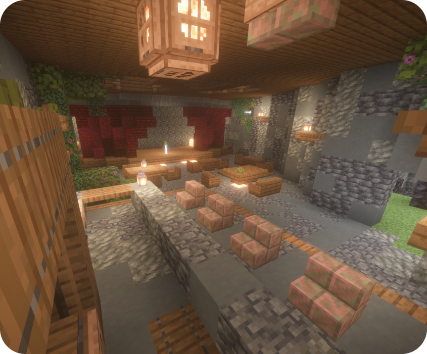

Бар “BERK BEER”
Когда человеку хочется посидеть и отдохнуть в красивом и уютном баре, пропустив стаканчик, - он идёт в "BERK BEER". У нас имеется большой выбор алкоголя, приятная музыка и хороший персонал. Элегантная утонченность и теплая, гостеприимная атмосфера этого бара привлекает сюда не только гостей города, но и самых известных людей со всего СПК. которые зашли на перерыв или чтобы выпить фирменный алкоголь города "БЕРК"
